|
FC
Groningen - Roda JC (2-1) 4 november 2006
|
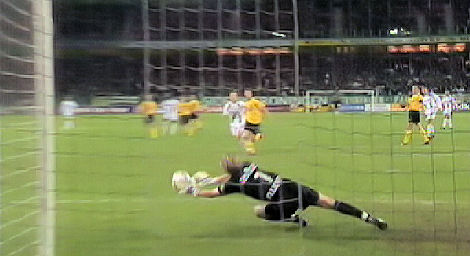
Bijna 20 minuten gespeeld als Kujovic een gevaarlijk afstandschot van Sankoh
onschadelijk maakt.
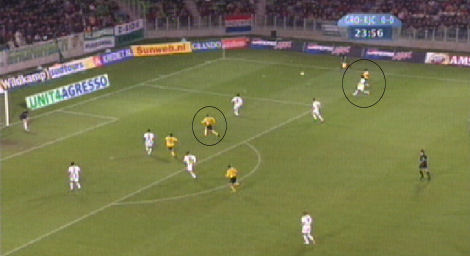
Kah loopt Suarez eruit en speelt de bal naar Vandamme die de bal maar net over
het doel kopt.
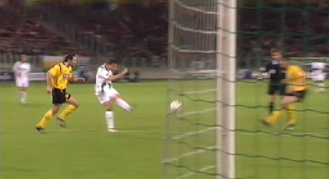
Slecht verdedigingswerk van Bodor biedt Levtsjenko een gevaarlijke schotkans. De
bal gaat echter hoog over het doel.
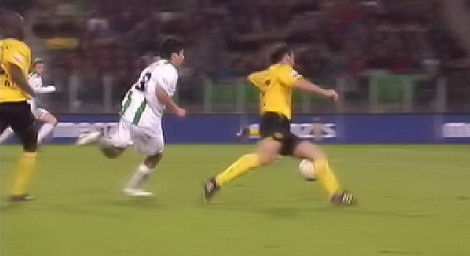
Na slecht verdedigingswerk van zowel Kah als Bodor kan Suarez de bal op
Nevland passen.
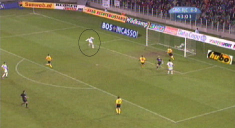
Deze schiet de bal op onbegrijpelijke wijze voor het lege doel over.
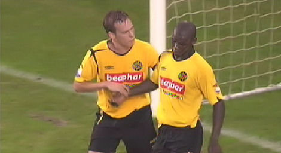
Saeijs probeert Kah op te monteren.
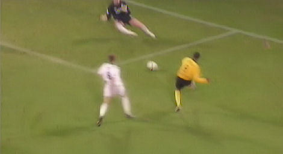
Knap voorbereidend werk van De Fauw stelt Agustien in staat om rechts voor de
goal in te schieten. Doelman Roorda moet tot het uiterste gaan om het schot te
keren. 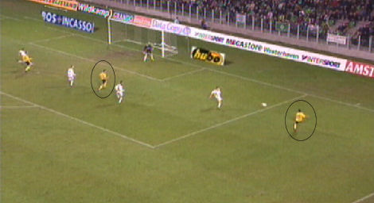
Een dieptepass komt terecht bij Ramzi die de bal voorzet op De Fauw die van
dichtbij 0-1 scoort, (59').
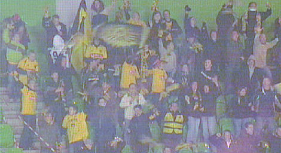
Dat maakt vrolijk.
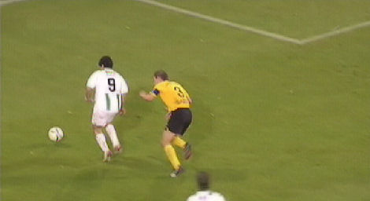
De pret duurt niet lang want na defensief geklungel van Saeijs kan Suarez de bal
op Nevland leggen.
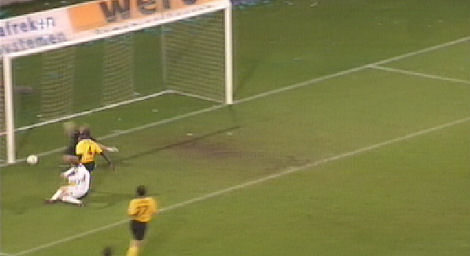
Die scoort in de korte hoek: 1-1, (71').
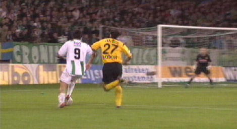
Bodor verspeelt de bal aan Suarez die zich vrij kan spelen en de bal in dezelfde
korte
hoek achter Kujovic werkt: 2-1, (91').
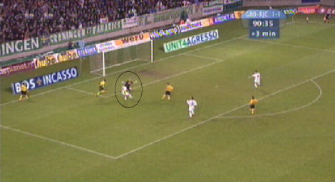
Het doelpunt.
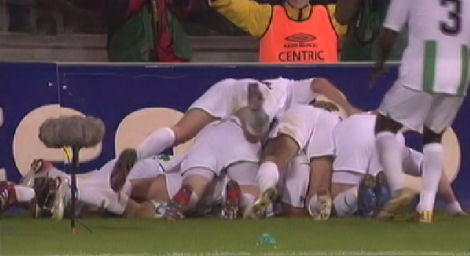
De ontlading bij de Groningers die weer ongeslagen blijven in hun Euroborg.
Wedstrijdverslag:
Beide ploegen begonnen gezapig en aftastend aan de
wedstrijd. Na twintig minuten kreeg Roda JC de eerste grote kans. Jamaïque
Vandamme kopte een voorzet van Pa Modou Kah over het doel. Daarna zocht ook FC
Groningen de aanval. Dat leidde, na een aantal kleine kansjes, tot de grootste
kans in 45. minuut. Nevland schoot een niet te missen voorzet van Suarez hoog
over een leeg doel.
Na rust was het in eerste instantie weer aftasten geblazen. Echter kwam Roda JC
in de 59. minuut op 0 - 1 voorsprong. Davy De Fauw reageerde attent op een mooie
voorzet van Adil Ramzi. Daarna had Roda JC het beste van het spel. Maar tot
uitgespeelde kansen leidde dat niet. Het was dan ook FC Groningen dat in de 71.
minuut langszij kwam door een treffer van Erik Nevland. Helemaal zuur werd het
in blessuretijd. Bodor schatte een bal verkeerd in waardoor Suarez met de bal
aan de haal ging en knap afrondde: 2 - 1.
Opstellingen
FC Groningen: Roorda; Silva, Sankoh, Kruiswijk, v.d. Linden (65. Florén);
Cornelisse, Lindgren, Seedorf (64. Lovre); Levtsjenko, Suarez en Nevland (88.
Salmon)
Roda JC: Kujovic; Saeijs, Bodor, Kah, de Jong (81. Lachambre); De Fauw, Meeuwis,
Agustien; Ramzi, Vandamme (86. Bouchiba) en Oper (70. van Tornhout)
Gele kaart: Suarez
Scheidsrechter: Wegereef
Toeschouwers: 19.008
© Koempels Pleasure Dome
|